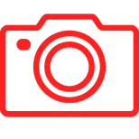
Enfoque Comercial y Marcas
Fotografía de Producto | Contenido para Redes Sociales | Fotografía Gastronómica
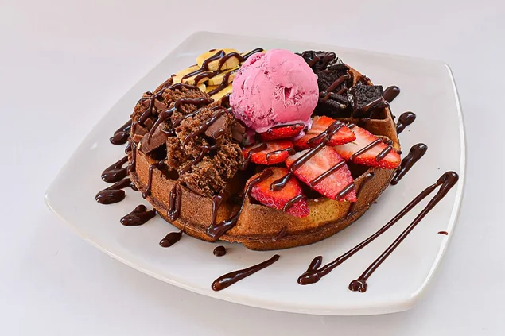
Fotografía profesional y contenido estratégico diseñado para destacar tu negocio, atraer clientes y elevar tu presencia visual.
VER PORTAFOLIO→Sobre Jotha
Soy Jotha, fotógrafo y creador de contenido, apasionado por capturar la esencia de cada proyecto. Mi enfoque es simple: crear imágenes que hablen, que conecten y que generen resultados.
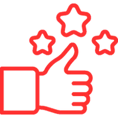
4 años en fotografía y contenido visual
Ideas que se convierten en imágenes
Tu proyecto también es el mío.
“La fotografía no solo muestra lo que ves, sino lo que sientes.”

Fotografía de Producto | Contenido para Redes Sociales | Fotografía Gastronómica

Fotografía Social/Bodas | Retrato Corporativo | Documental de Eventos
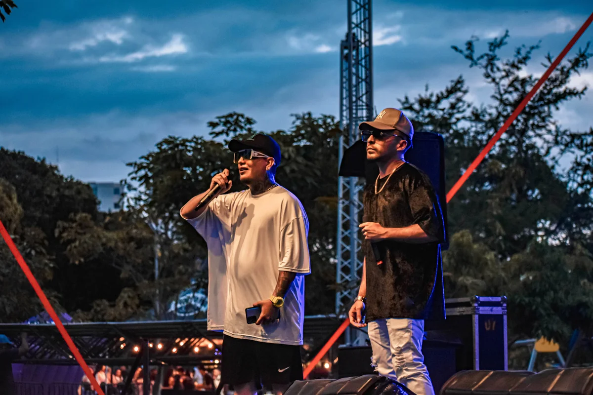
Editar videos para redes sociales
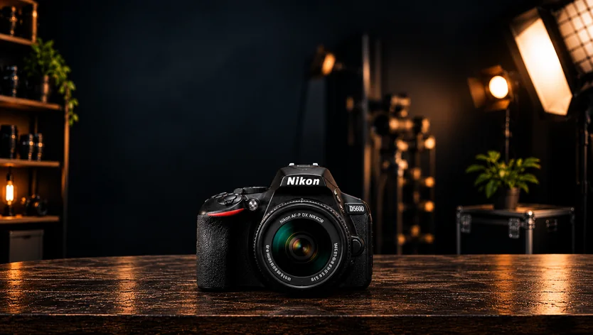
Emprendedores, pequeñas y medianas empresas, marcas personales y creadores de contenido que necesitan fotografías y contenido visual profesional para promocionar sus productos, servicios o imagen en redes sociales y medios digitales.
“No solo capturo imágenes; creo contenido que hace que tu marca se vea, conecte y destaque.”
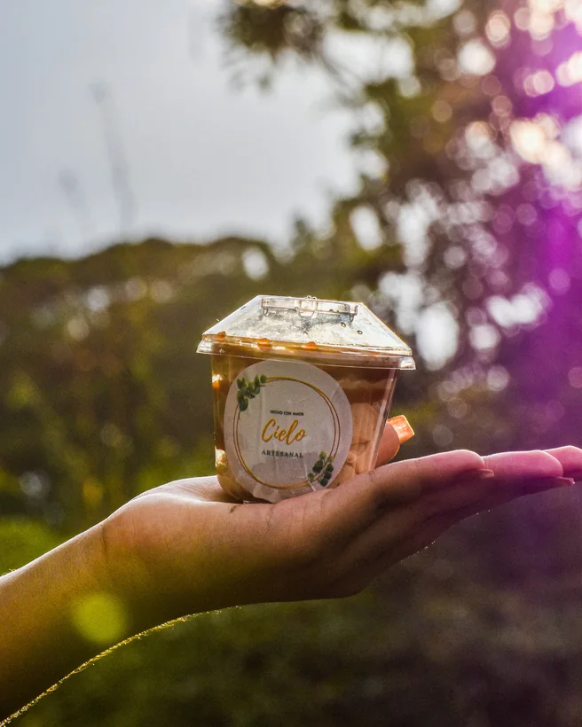
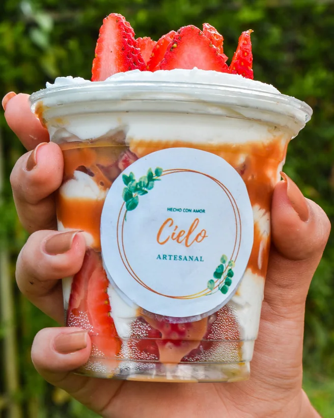
Creo fotografías y contenido visual profesional que cuentan la esencia de cada marca, combinando creatividad, calidad y una estética moderna para ayudar a negocios, emprendedores y creadores a destacar y conectar con su público.
Ideas que se convierten en imágenes.
Experiencia, responsabilidad y calidad en cada fotografía y proyecto.
Una estética actual, limpia y atractiva, adaptada a redes sociales.
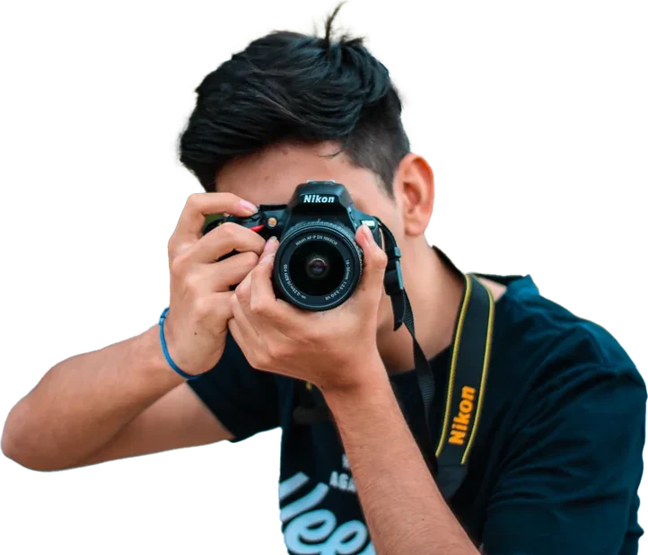
CalidadEstética moderna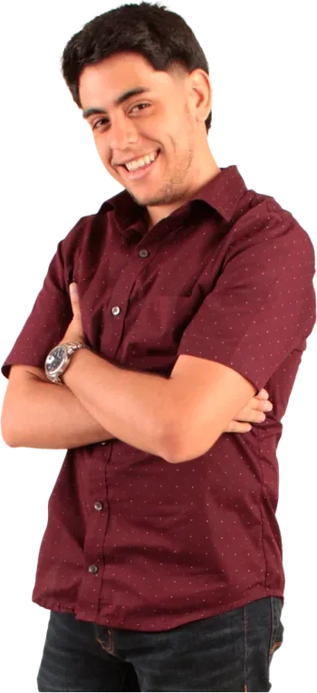
ProfesionalCreativoModernoNuestro trabajo
Toca el lente de la Nikon D5600 y cruza al otro lado: mis fotografías te esperan dentro.
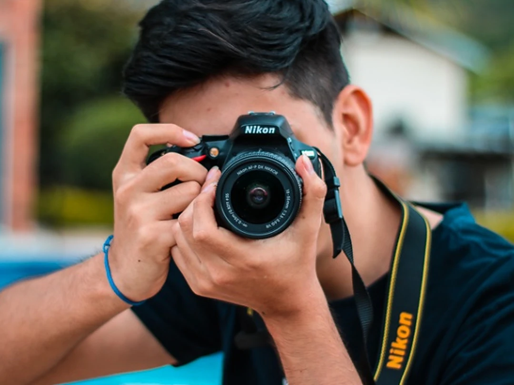
◉ TOCA EL LENTE PARA ENTRAR
Lo que dicen nuestros clientes
“Excelente trabajo, superó todas nuestras expectativas. El contenido quedó increíble y muy profesional.”
“Capturó la esencia de nuestra marca en cada imagen. 100% recomendado.”
“La mejor decisión para nuestro lanzamiento. Creatividad, compromiso y una calidad insuperable.”
¿Listo para crear algo increíble?
Contáctame y cuéntame tu idea. Estoy aquí para ayudarte.
Captura tu visión, eleva tu marca.
Portafolio